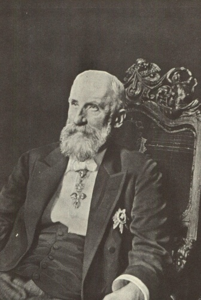
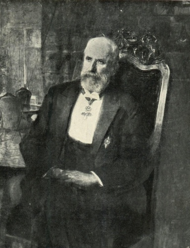
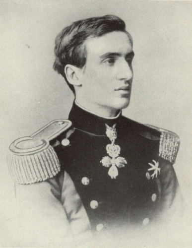
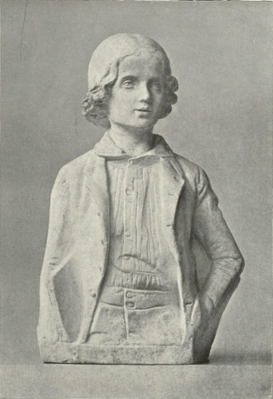
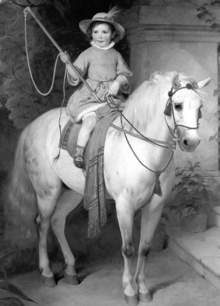

Portréty knížete Jana II. z Lichtenštejna

Jedna z posledních fotografií knížete Jana II.

Fotografie z roku 1928

Jan II. v době 50. výročí své vlády v roce 1908

Jan II. ve věku 50 let (rok 1890)

Kníže Jan II. v roce 1863

Kníže Jan II. po nástupu vlády v roce 1858

Jan II. jako jedenáctiletý princ

Portrét pozdějšího knížete Jana II. na poníkovi (Friedrich von Amerling), rok 1845, výřez